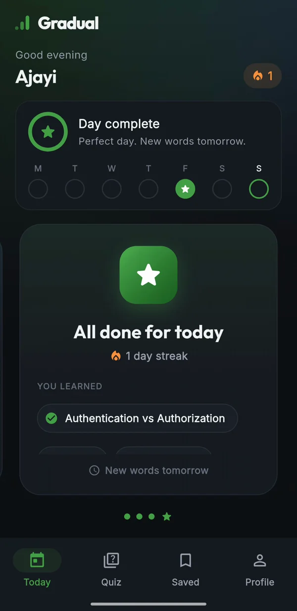
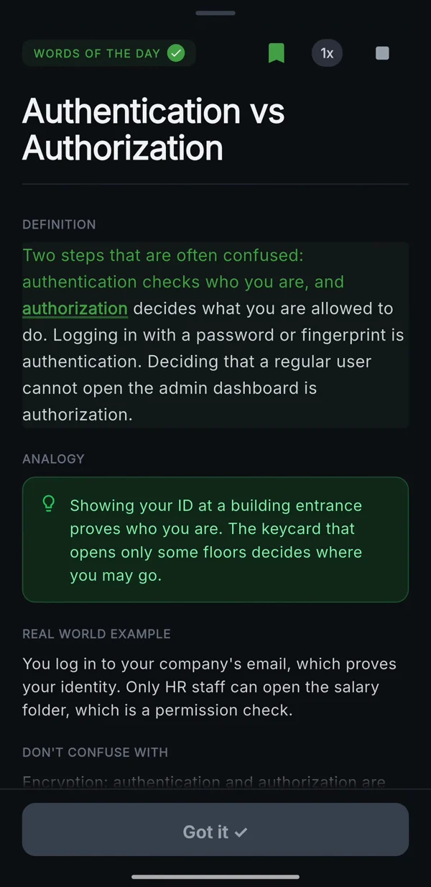
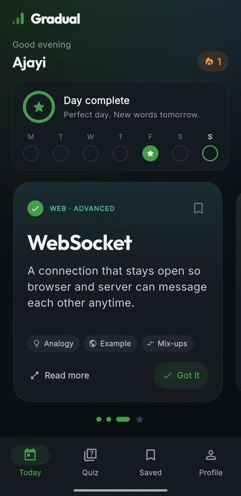

Gradual
Learn software engineering three words a day. Short cards, read-aloud, streaks and a weekend quiz turn jargon into something that actually sticks.


A quick tour
Captured from the app on my phone. Tap any screen to flip through them all.

Cramming jargon doesn't stick.
Students meet hundreds of technical terms and try to cram them before an exam or interview. Textbooks are dense, and whatever you read yesterday is mostly gone by tomorrow.
Small, daily, and brought back.
Gradual gives you three concepts a day, each explained four ways: a definition, an analogy, a real-world example and what it's commonly confused with.
A streak keeps the habit going, a weekend quiz checks what you kept, and words you miss or save come back later for review.
A day in 27 seconds.
Opening the app, checking today's progress, swiping through the word cards, then opening one in the reader and letting read-aloud take over. Watch the highlight move through the definition as it's spoken.
Recorded on my phone and trimmed for length. Recorded without sound.
A day on Gradual
Cards · reader · read-aloud
What makes it stick
Built feature by feature over 72 commits, with tests across the core logic.
Listen, and follow along
Text-to-speech reads any concept while the current phrase lights up and the page scrolls with it, at an adjustable reading speed.
A habit you can see
A streak engine tracks daily reading, with weekends kept for review so they don't break your run. Progress shows as a week strip and a heatmap.
Weekend check-in
Every Saturday and Sunday, a quiz of up to 10 questions tests the words you read that week, once you've read at least five.
Spaced review
Words you save or get wrong come back for review later, and every learned word lives in a searchable archive.
Works without data
Today's words are saved on the phone and the week ahead is prefetched, so the daily habit doesn't depend on a connection.
A tested content pipeline
Concepts are written as weekly JSON files and published to Firestore by a Python script that validates the schema and links first, with its own tests.